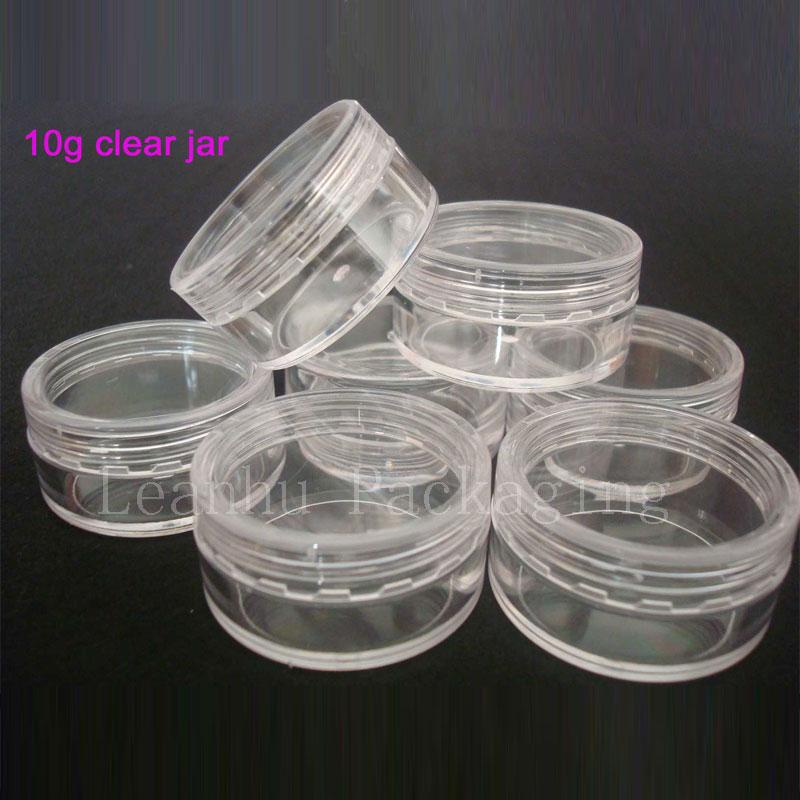
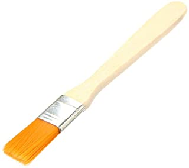
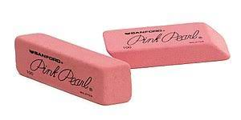
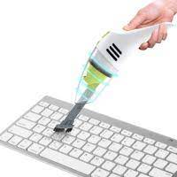
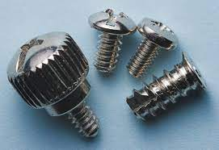
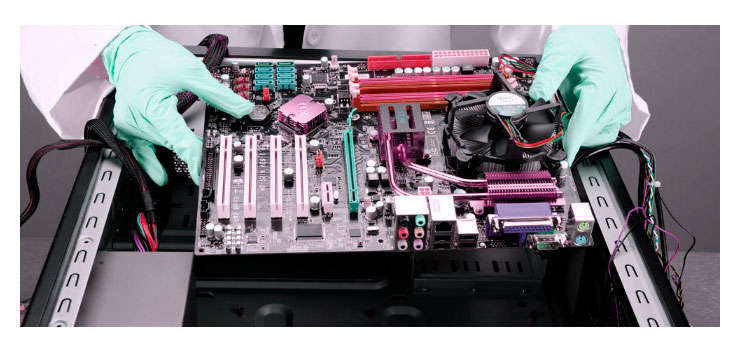
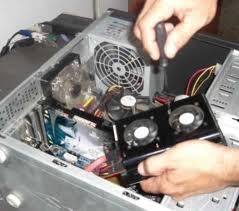
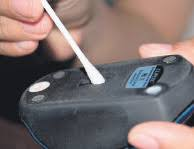

MANTENIMIENTO PREVENTIVO BÁSICO
Ahora como bien el nombre lo indica mantenimiento "preventivo", es el conjunto de acciones que se llevan a cabo en el ordenador con el fin de "prevenir" que falle y prolongar la vida útil del equipo. Aquí te damos algunos consejos muy prácticos y útiles, que te permitirán mantener tu equipo en óptimas condiciones por más tiempo.
Depende de diversos factores: La cantidad de horas diarias de operación, el tipo de actividad (aplicaciones) que se ejecutan, el ambiente donde se encuentra instalada (si hay polvo, calor, etc.), el estado general (si es un equipo nuevo o muy usado), y el resultado obtenido en el último mantenimiento.
Antes de hacer un mantenimiento preventivo tenemos que tener algunas recomendaciones de seguridad:
1- No portar anillos ni joyas.
2- Utilizar las herramientas adecuadas y organizada.
3- Mantener aseado el lugar de trabajo.
4- Organizar los componentes desarmados en secuencia.
IMPLEMENTOS USADOS EN EL MANTENIMIENTO PREVENTIVO BÁSICO
1- Destornilladores: Son útiles al abrir el gabinete o remover alguna pieza dentro. Preferentemente deben ser de tamaños chico y mediano, y si es posible tener uno plano y otro de cruz.

2- Pequeños contenedores: Estos son necesarios para colocar ahí las piezas pequeñas que vamos quitante a la hora de desarmar. Normalmente solo son tornillos, mas sin embargo es importante separarlos y si es posible marcar el contenedor con el nombre del lugar al que corresponde, para que a la hora de armar no perdamos tiempo averiguando cuales tornillos pertenecen a cada lugar.
3- Una brocha de 3cm: Es utilizada para remover polvo y suciedad en algunos elementos.
4- Una goma de borrar: Esta se utiliza para limpiar las tarjetas. Es importante que esta sea suave para que no dañe a la tarjeta.
5- Hisopos: Son utilizados para limpiar componentes muy sensibles como las unidades de almacenamiento.
6- Paños de algodón: Son utilizados para remover polvo o aplicar las sustancias químicas limpiadoras
7- Aspiradora pequeña: Contar con una pequeña aspiradora es de gran utilidad ya que después de limpiar cada dispositivo es conveniente recoger el polvo y suciedad que fue retirada para evitar que vuelva a la computadora o el ambiente en la que se maneja.
PRECAUCIONES
1- No coloque su computadora directamente frente a una fuente de calor o un aire acondicionado.
2- No coloque su sistema cerca de fuentes de humedad que pueda caer o filtrarse al mismo. Esto incluye ventanas abiertas a través de las cuales puede pasar el agua de lluvia, pues a menor temperatura mayor es la probabilidad de acumulación de electricidad estática… el peor enemigo de las computadoras, y mayor la posibilidad de corrosión.
3- No conecte su PC ni ninguno de sus periféricos directamente a los enchufes de la pared. En lugar de esto, conecte su sistema a uno o más "surge protectors" o a uno o más UPS.
MANTENIMIENTO CORRECTIVO
Limpieza interna de la PC
El cable de entrada de energía eléctrica debe ser desconectado de la fuente de la PC. Todos los aparatos que se conectan al equipo deben estar apagados. Los cables que llegan de los periféricos a la PC también deben desconectarse debemos retirar la tapadera lateral para poder tener a la vista las partes internas de la PC.Con el aire comprimido, inyecte aire POR TODOS LAS REGIONES QUE SE OBSERVEN; La fuente de energía de la computadora retiene la mayor cantidad de polvo, por lo que hay que concentrar el aire comprimido en las rejillas de dicha fuente.
Hay que revisar los conectores internos de la PC (puntos en donde conectan cables), para asegurarse que no estén flojos. Igual procedimiento es aplicable a las placas y módulos de memoria RAM, los malos contactos pueden producir BLOQUEOS y RESETEO de la PC.
Revisar los contenedores internos del PC: Asegurándonos que estén firmes y no flojos. Revisar además que las tarjetas de expansión y los módulos de memoria estén bien conectados.
Limpieza del monitor PC: Se recomienda destapar el monitor del PC solo en caso que se vaya a reparar pues luego de apagado almacena mucha energía que podría ser peligrosa, si no es el caso, solo soplar aire al interior por las rejillas y limpiar la pantalla y el filtro de la pantalla con un paño seco que no deje residuos ni pelusas.
Limpieza del teclado: Para limpiar el teclado voltéelo boca e iyectamos aire entre sus teclas para retirar el polvo y cuerpos extraños. No es necesario retirar las teclas , se pueden limpiar pasando entre ellas un pañuelo humedecido con jabón liquido.
Limpieza del ratón: Para la limpieza del ratón humedecemos un paño que no suelte pelusa o un bastoncillo de algodón con agua y jabón suave y frota suavemente la superficie exterior del ratón, la rueda y el sensor óptico.
OTRAS TAREAS DE MANTENIMIENTO
1- Optimización de la velocidad de desempeño de la computadora y los principales programas que utiliza.
2- Eliminación de virus informático.
3- Un completo reporte del mantenimiento realizado acada equipo.
4- Formateo y reinstalación del sistema operativo con su respectiva configuración de software y hardware (en caso de ser necesario).
5- Revisión de los recursos del sistema, memoria, procesador y disco duro.